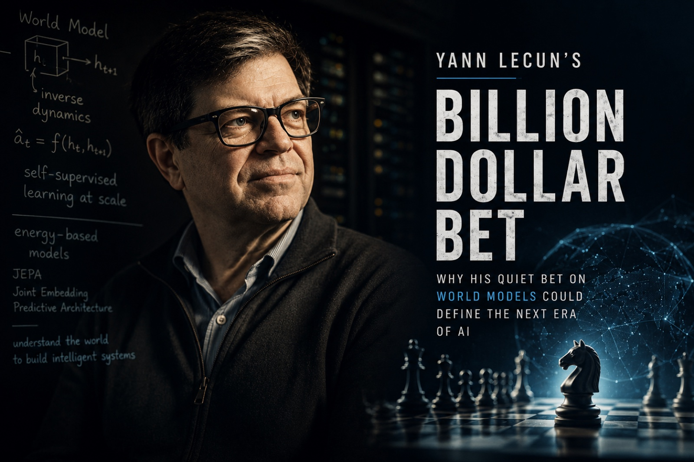

Yann LeCun’s Billion-Dollar Bet.

The AI world has a strange habit of turning serious technical disagreements into slogans.
One camp says large language models will scale all the way to artificial general intelligence. More data, more compute, more reasoning traces, more tools, more agents. Keep scaling the next-token machine and intelligence will emerge.
Yann LeCun thinks that view is wrong. Not slightly wrong. Fundamentally wrong.
LeCun is not some random AI skeptic. He is one of the central figures behind the deep learning revolution. In 2018, ACM awarded LeCun, Geoffrey Hinton, and Yoshua Bengio for “conceptual and engineering breakthroughs” that made deep neural networks a critical component of computing.1
So when LeCun rejects the dominant path of AI, the disagreement matters.
His claim is not that LLMs are useless. That would be a lazy reading. LLMs are obviously useful. They write, summarise, code, translate, reason through text, and already power products used by millions of people. His deeper claim is that language models are not the right foundation for machines that understand reality, plan reliably, and act in the physical world.
That is why he left Meta and co-founded Advanced Machine Intelligence, or AMI, with Alexandre LeBrun, with LeCun serving as executive chairman. In March 2026, Reuters reported that AMI raised $1.03 billion at a $3.5 billion pre-money valuation to commercialise AI systems built around reasoning, planning, and world models.2
LeCun’s bet is not that LLMs are useless. It is that intelligence requires models that can predict consequences, plan actions, and understand the world beyond text.
I. First, what is an LLM?
An LLM, or large language model, is an AI system trained on massive amounts of text to predict tokens. A token is not exactly a word. It can be a word, part of a word, punctuation, or a small text fragment. When an LLM writes a sentence, it generates one token at a time. It looks at the context and predicts what token should come next.
The modern LLM era was made possible by the Transformer architecture, introduced in the 2017 paper Attention Is All You Need. The Transformer replaced older recurrent and convolutional sequence models with an attention-based architecture that could process language more efficiently and at larger scale.4
GPT-1 then showed the power of a simple recipe: pretrain a Transformer on unlabeled text using a language modelling objective, then fine-tune on supervised tasks. The original OpenAI paper described this as unsupervised pretraining followed by supervised fine-tuning.5
This sounds almost too simple. Predict the next token enough times and the model starts learning grammar, facts, style, logic, code, and patterns of reasoning. But there is one detail that matters more than any other for the rest of this argument.
That is both its superpower and its weakness.
II. Why LeCun thinks LLMs are not enough
LeCun’s argument starts with a simple observation: language is not reality.
Language is a human-made interface. It is already compressed. When someone writes “the glass fell off the table and shattered,” the messy physical details have been reduced into a neat sentence. The sentence does not contain the full trajectory, the forces, the material properties, the sound, the edge angle, or the thousands of tiny visual cues involved.
An LLM sees the sentence. A child sees the world. That difference matters.
In LeCun’s 2022 position paper, A Path Towards Autonomous Machine Intelligence, he argued that autonomous intelligent agents need predictive world models, intrinsic objectives, hierarchical planning, and joint embedding architectures trained with self-supervised learning.6
A world model is an internal model of how the world changes. It lets a system ask one question that an LLM cannot answer from text alone: if I do this, what happens next?
A robot needs that. A self-driving car needs it. A useful home assistant needs it. A genuinely agentic AI needs it. This is the sharpest distinction in the whole debate.
III. What is JEPA?
JEPA stands for Joint Embedding Predictive Architecture. It is not a single model. It is an architecture, a training framework that can be applied to images, video, audio, and other modalities. That is a small distinction with large consequences.
A normal generative model tries to predict missing data directly. If part of an image is missing, it tries to reconstruct the missing pixels. If part of a sentence is missing, it tries to predict the missing words.
JEPA does something different. It does not try to predict every pixel or every word. Instead, it converts inputs into embeddings, which are compressed numerical representations, and then learns to predict the embedding of one part of the input from the embedding of another part.
In plain English: JEPA learns to predict meaning, structure, and state, not surface detail.
Imagine watching a video of a ball rolling across a table. A pixel-prediction model tries to guess the exact colour value of every pixel in the next frame. That includes shadows, background noise, lighting changes, and tiny irrelevant details. A JEPA-style model tries to learn the abstract structure: the ball is moving, the table has an edge, gravity exists, the ball may fall if it crosses the boundary. That is closer to common sense.
This is why LeCun is obsessed with prediction in representation space. Instead of predicting every pixel in the next video frame, the model maps the video and target frame into embeddings, then predicts the next embedding. The system can focus on salient features and discard unpredictable noise.
IV. I-JEPA, V-JEPA, and V-JEPA 2
I-JEPA, developed by Mahmoud Assran and colleagues with LeCun among the authors, applied this idea to images.78 The model sees part of an image and predicts the representation of another part. The goal is to learn semantic visual representations without relying on hand-crafted augmentations or labels.
V-JEPA extended the idea to video. Meta described V-JEPA as a non-generative model that learns by predicting missing or masked parts of a video in an abstract representation space. Unlike generative models, it does not need to fill in every missing pixel. It can discard unpredictable information and focus on higher-level conceptual structure.9
V-JEPA 2 pushed this further into robotics. Meta described it as a 1.2 billion-parameter world model trained on video, designed for visual understanding, prediction, zero-shot planning, and robot control in new environments.10
This is the part that makes LeCun’s bet more than philosophy.
If JEPA can learn useful world models from video, then a robot does not need to be trained separately on 10,000 examples of pouring water, 10,000 examples of pouring juice, and 10,000 examples of pouring into different cup shapes. It could learn the underlying concept: liquids flow downward, containers fill from the bottom, objects block motion, gravity is constant.
That is the dream. Not a chatbot with arms. A machine with physical intuition.
V. Why robotics exposes the weakness of LLMs
Robotics is where the “just scale LLMs” argument becomes harder.
Text is forgiving. If an AI writes a weak paragraph, you edit it. If it hallucinates, you check it. If it gives a bad plan, nothing necessarily breaks. Robots do not live in that world.
A robot must deal with friction, weight, occlusion, deformable objects, liquid, fragile items, moving humans, unknown rooms, and consequences. If it gets the next action wrong, it may break the glass, spill the water, damage the object, or hurt someone. LeCun’s claim is that an agentic system cannot be reliable unless it can predict what will happen before it acts.
AMI’s investor announcement describes the company’s world models as systems that learn abstract representations of reality, predict how situations evolve, predict how actions lead to consequences, and plan sequences of actions under real-world constraints.3
So the debate is not really LLMs versus JEPA. It is something deeper.
LeCun says grounded world models are required.
VI. But LeCun has been wrong before, right?
Yes, but the history is more interesting than “LeCun was wrong.” LeCun has often been early. Sometimes too early.
In the 2000s, Geoffrey Hinton’s work on deep belief nets and layer-wise unsupervised pretraining helped revive interest in deep networks. Hinton and colleagues showed a fast greedy algorithm for learning deep belief networks one layer at a time, using unsupervised learning to initialise deeper systems.11 That was a real breakthrough. It helped reopen the door to deep learning.
But the exact recipe did not become the final dominant path. As GPUs, data, better activations, better initialisation, batch normalisation, residual networks, and large supervised datasets improved, the field moved away from greedy layer-wise unsupervised pretraining as the main method for training deep networks. Then language models changed the story again.
LeCun had long argued that learning from raw data would be central to intelligence. His famous “cake” analogy, originally framed around unsupervised learning and later updated around self-supervised learning, argued that the bulk of intelligence comes from learning from raw data, while supervised learning is only the icing and reinforcement learning is the cherry.
So was LeCun wrong? The most accurate version is this.
He was right about self-supervision, but wrong or early about where it would first explode.
He expected learning from the world, especially vision and video, to be the key path. Instead, the first massive breakthrough came from language. GPT-style models turned self-supervised next-token prediction into the most commercially important AI paradigm in the world. That should make anyone humble.
It also makes his current bet more interesting. LeCun is not rejecting the lesson of LLMs. He is trying to take the deeper lesson, self-supervised learning at scale, and apply it to world understanding rather than text generation.
VII. The strongest counterargument to LeCun
The strongest argument against LeCun is that scaling keeps surprising everyone.
Many people once said next-token prediction was too shallow to produce reasoning. Then LLMs started writing code, solving competition mathematics problems, using tools, passing professional exams, and helping with research.
There is also evidence that LLMs may learn more than surface text. A 2024 ICLR paper, Language Models Represent Space and Time, found that Llama-2 models learned linear representations of space and time and identified “space neurons” and “time neurons,” suggesting that modern LLMs may contain basic ingredients of world models.12
There is another path too: generative video models. OpenAI’s Sora technical report argued that scaling video generation models is a promising route toward general-purpose simulators of the physical world, while also being explicit about limitations such as failures in basic physics, object permanence, and state changes.13
So LeCun could be wrong in one specific way. Maybe world models do emerge implicitly from scaled multimodal generative models. Maybe the future is not pure JEPA. Maybe it is LLMs plus video models plus reinforcement learning plus tools plus memory plus explicit planning. Maybe next-token prediction is not the final form, but it becomes one module inside a larger intelligence stack. That is a serious possibility, not a strawman.
VIII. The strongest argument for LeCun
The strongest argument for LeCun is that intelligence is not the same as verbal competence.
Humans do not learn the world by reading every book first. Babies build models of objects, gravity, space, cause and effect, and social behaviour long before they can write essays. Animals cannot write language, but they navigate the world. A cat cannot explain physics, but it has enough physical intuition to jump, balance, hunt, avoid obstacles, and interact with objects.
That is the uncomfortable point. If a house cat has better physical common sense than our best robots, our current paradigm is probably missing something fundamental.
LeCun’s bet is that the missing piece is not more text. It is predictive abstraction. A system must learn compact representations of reality, predict how those representations change, and use those predictions to plan.
DINOv3 is part of this broader movement. Meta described it as a self-supervised vision model that creates universal vision backbones and achieves strong results across image classification, segmentation, object tracking, and other downstream vision tasks.14
LeJEPA, released in 2025 by Randall Balestriero and Yann LeCun, tries to make JEPA-style learning more principled by replacing many training heuristics with a theoretically grounded objective called SIGReg. The paper frames JEPA as a blueprint for learning manipulable representations of the world and its dynamics.15
This matters because LeCun is not just making speeches. A research programme is forming around the claim.
IX. The real question
The question is not whether LLMs are intelligent. They are intelligent in some ways. The question is whether they are the right architecture for the next jump: autonomous systems that reason, plan, and act reliably in the real world.
LeCun says no. The mainstream AI industry says: maybe yes, or at least yes enough to keep scaling. A more balanced reading is this.
LLMs are extraordinary engines for language, knowledge, code, and symbolic reasoning. But the world is not made of tokens. It is continuous, noisy, physical, causal, and occasionally dangerous. The closer AI gets to action, the more it needs prediction. The more it needs prediction, the more it needs world models.
So LeCun’s bet is not anti-LLM. It is post-LLM. It says the next frontier is not a model that can answer any question. It is a model that can ask one question well.
That may be the difference between a chatbot and an intelligent agent. And if LeCun is right, the next great AI race will not be won by the system that writes the best paragraph. It will be won by the system that understands the world well enough to act in it.
1 ACM (2018). Turing Award citation for Yann LeCun, Geoffrey Hinton and Yoshua Bengio, “for conceptual and engineering breakthroughs that have made deep neural networks a critical component of computing.”
2 Reuters (10 March 2026). Ex-Meta AI chief Yann LeCun’s AMI raises $1.03 billion for alternative AI approach. Reports AMI’s $1.03B seed raise at a $3.5B pre-money valuation to commercialise reasoning, planning and world-model systems.
3 Cathay Innovation (2026). Advanced Machine Intelligence (AMI) is enabling the next AI revolution built on foundational world models. Investor announcement describing AMI’s thesis around foundational world models.
4 Vaswani et al. (2017). Attention Is All You Need. The Transformer architecture, the substrate for nearly every modern LLM.
5 Radford et al., OpenAI (2018). Improving Language Understanding by Generative Pre-Training. The original GPT paper describing unsupervised pretraining followed by supervised fine-tuning.
6 LeCun (2022). A Path Towards Autonomous Machine Intelligence. Position paper arguing for predictive world models, intrinsic objectives, hierarchical planning, and joint embedding architectures.
7 Meta AI (2023). I-JEPA: a human-like AI model. Meta’s blog introducing I-JEPA and the joint-embedding predictive idea.
8 Assran et al. (2023). Self-Supervised Learning from Images with a Joint-Embedding Predictive Architecture. The I-JEPA paper, lead author Mahmoud Assran, with LeCun among the authors.
9 Meta AI (2024). V-JEPA: the next step toward advanced machine intelligence. Extends the JEPA idea from images to video in an abstract representation space.
10 Meta AI (2025). V-JEPA 2 world model and new benchmarks. A 1.2B-parameter world model trained on video for understanding, prediction, zero-shot planning and robot control.
11 Hinton, Osindero & Teh (2006). A Fast Learning Algorithm for Deep Belief Nets. The greedy layer-wise unsupervised pretraining paper that helped reopen deep learning.
12 Gurnee & Tegmark (2024). Language Models Represent Space and Time. Finds linear representations of space and time inside Llama-2, with identifiable “space neurons” and “time neurons.”
13 OpenAI (2024). Video generation models as world simulators. Sora technical report arguing that scaled video generation is a promising route toward general-purpose simulators, while flagging limitations in physics and object permanence.
14 Meta AI (2025). DINOv3. A self-supervised vision model providing universal backbones for downstream vision tasks.
15 Balestriero & LeCun (2025). LeJEPA: Provable and Scalable Self-Supervised Learning Without the Heuristics. Replaces JEPA training heuristics with a theoretically grounded SIGReg objective; frames JEPA as a blueprint for learning manipulable representations of the world and its dynamics.
This is Essay No. 004. The topics: intelligence, AI, systems, knowledge, and the questions underneath the questions everyone else is asking. If you read this far and disagreed with any part of it, write to me. I read everything.